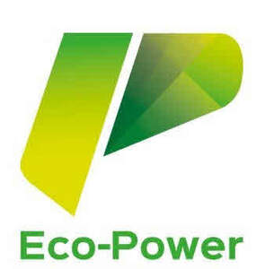

Trade Mark Journal No.2025/024 13 June 2025
UK00004178239 24 March 2025 (4,5,11,37,39,40,41,42,44)

- Class 4
- Wood for use as fuel; Wood pellet fuel; Fuels; Wood heating pellets; Wood chips for use as fuel; Fuel products of pressed wood chips; Fossil fuels; Ethanol fuels; Gas fuels; Wood shavings for lighting fires; Wood spills for lighting; Hydrocarbon fuels derived from tar; Coal based fuels; Wood spills for lighting fires.
- Class 5
- Dietary supplements for human beings; Dietary supplements promoting fitness and endurance; Health food supplements for persons with special dietary requirements.
- Class 11
- Wood stoves; Wood burning stoves; Solid fuel burning stoves; Combustion installations for fossil fuels; Combustion installations for waste fuels.
- Class 37
- Waste disposal [cleaning service]; Waste disposal for others [cleaning service]; Hazardous waste clean-up services; Waste removal [cleaning]; Installation of solar powered systems; Installation of non-residential solar panel power systems; Installation of residential solar panel power systems; Maintenance and repair of solar power installations.
- Class 39
- Storage of waste; Waste storage; Transport and storage of waste; Storage of contaminated waste; Transport and storage of trash; Hire of waste storage containers; Disposal [transport] of waste; Waste transport; Bulk storage; Dumping [transportation] of waste; Waste removal [transport]; Transportation of medical waste and special waste; Transport and storage; Clearance [removal and transportation] of waste; Haulage services; Road haulage services; Transport of freight containers by lorry; Truck transport; Road freight services; Transportation of freight by road; Road transport services for passengers; Road transport services.
- Class 40
- Recycling of waste; Waste disposal [treatment of waste]; Waste incineration; Incineration of waste and trash; Recycling of waste and rubbish; Recycling of waste and trash; Recycling and waste treatment; Hazardous waste management; Recycling of waste products; Treatment of hazardous waste; Waste recycling services; Waste management services [recycling]; Hazardous waste treatment services; Waste treatment [transformation].
- Class 41
- Horse training; Organization of horse races; Horse shows; Conducting horse races; Provision of horse riding facilities; Horse shows (Organising -); Horse jumping events (Organising of -); Organization, arranging and conducting of horse races; Health club services [health and fitness training]; Health and fitness training; Health and fitness club services; Provision of health club [physical exercise] facilities; Providing health club and gymnasium services; Physical fitness training services.
- Class 42
- Environmental monitoring of waste treatment areas; Environmental monitoring of waste storage areas; Environmental monitoring services; Monitoring of contaminated land; Construction design; Construction draughting; Construction drafting; Development of construction projects.
- Class 44
- Horse farms; Breeding of thoroughbred horses; Horse breeding and stud services; Horse breeding services; Stud services for horses; Animal grooming; Medical and healthcare services; Healthcare consultancy services; Healthcare advisory services; Healthcare information services; Health spa services; Health consultancy; Health centre services; Health counselling.
ESC INVESTMENTS LIMITED
Representative: Franks & Co Ltd